Mesma câmera em todas (a do Laboratório: 18 m da explosão, de cima e de lado), mesma granada, capturada nos mesmos instantes depois da detonação. Gerado por capturar.mjs nesta pasta; a última linha, o SDK depois da Fase 5, por capturar-sdk-novo.mjs.
| 0,08 s | 0,25 s | 0,5 s | 1 s | 2 s | 4 s | |
|---|---|---|---|---|---|---|
| Laboratório de Explosõestime de efeitos, "versão final" | 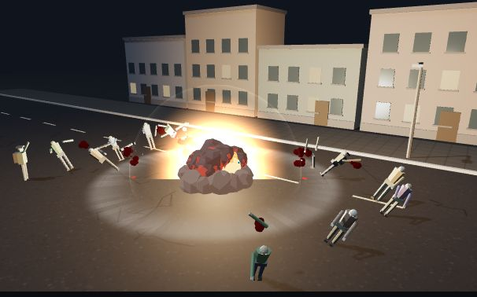 | 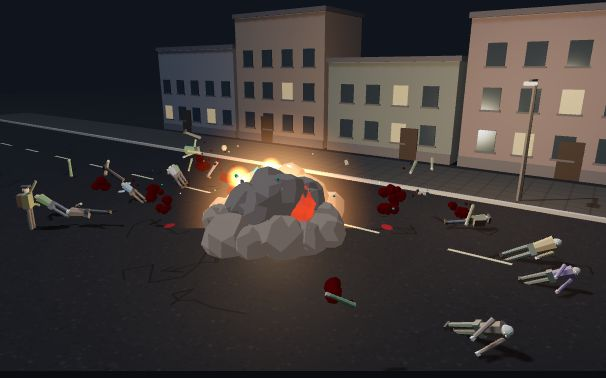 | 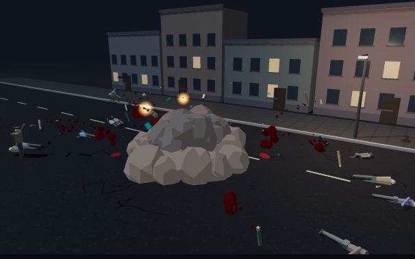 | 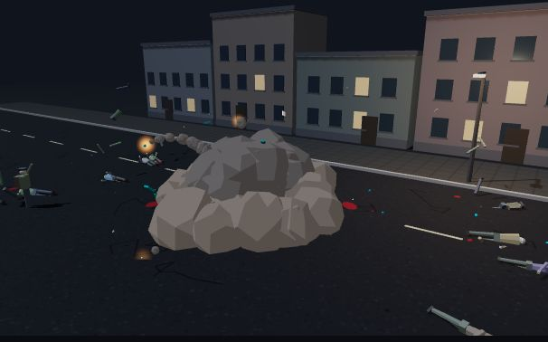 | 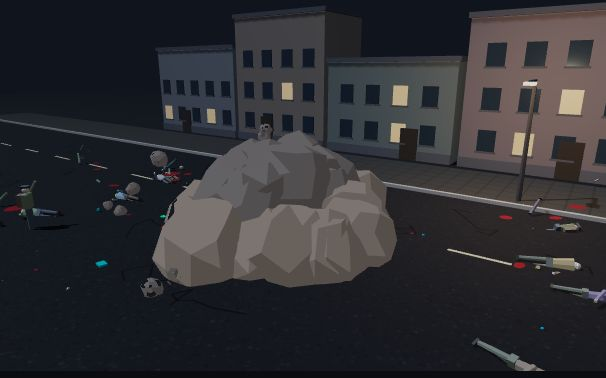 | 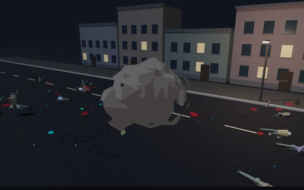 |
| Jogo (modo livre do site)versão reduzida do Laboratório, com teto por área e menos detalhe de longe | 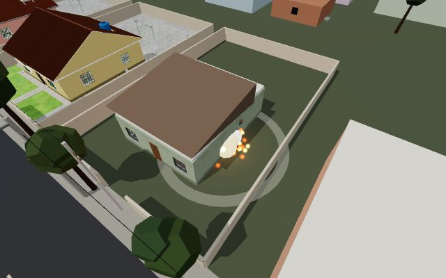 | 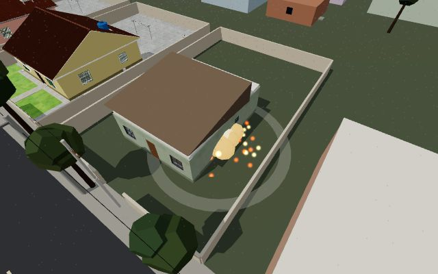 | 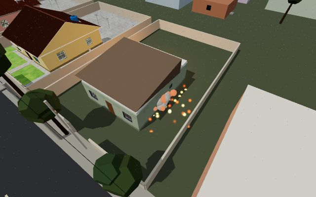 | 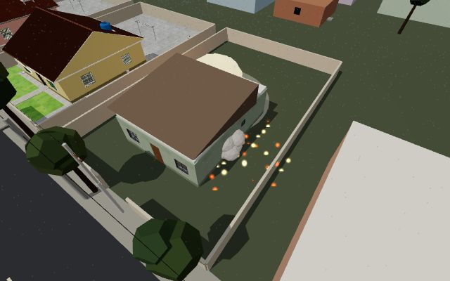 | 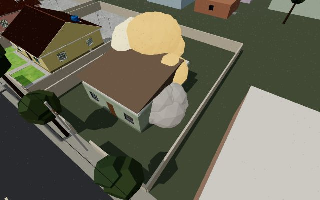 | 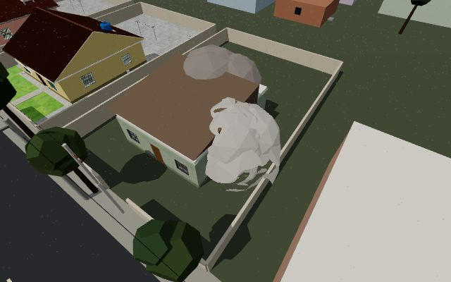 |
| SDK antes da Fase 5game-destruction-three, onExplode com as partículas próprias (fogo e fumaça não apareciam) | 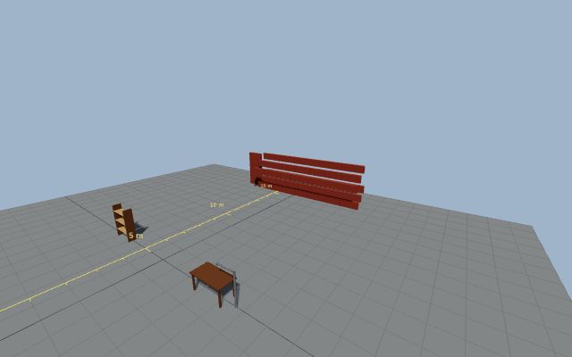 | 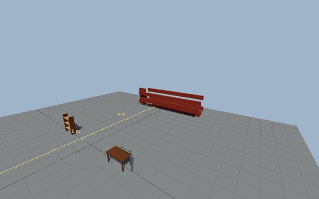 | 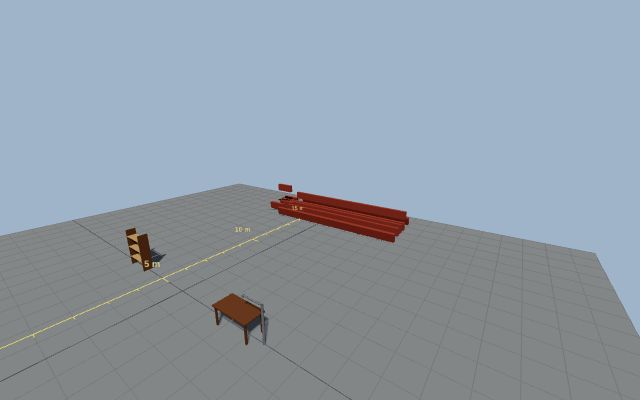 | 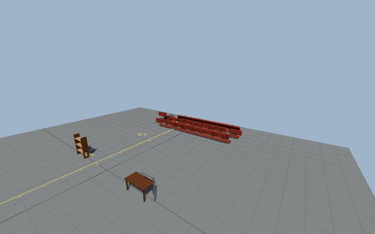 | 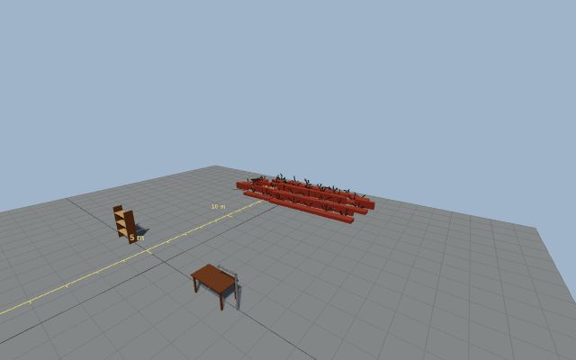 | |
| SDK novo (Fase 5)a explosão do Laboratório em game-vfx, desenhada por game-vfx-three, pela sala de testes | 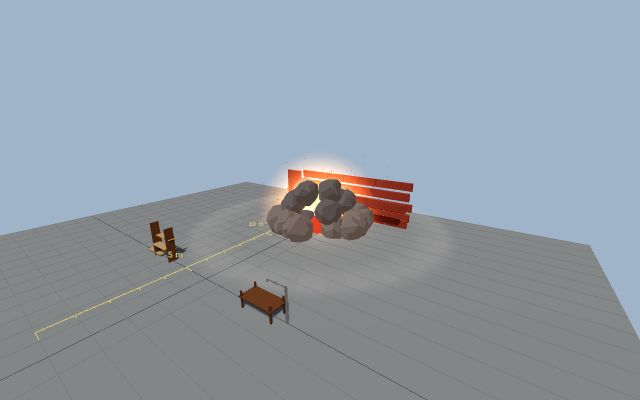 | 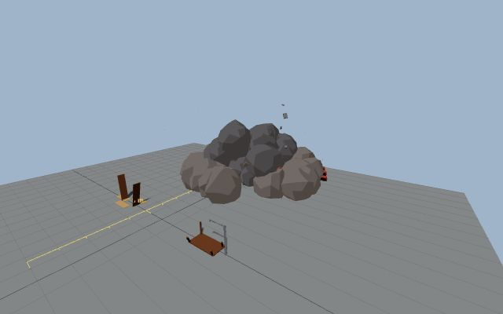 | 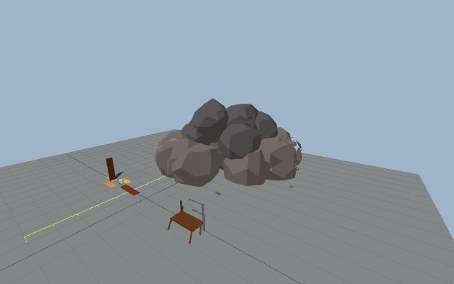 | 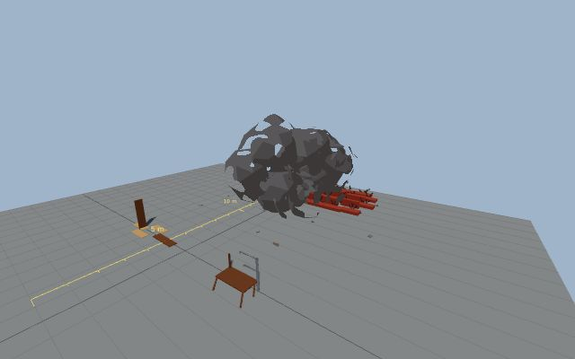 | 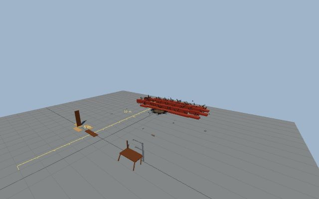 |